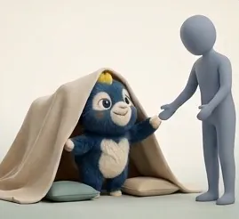
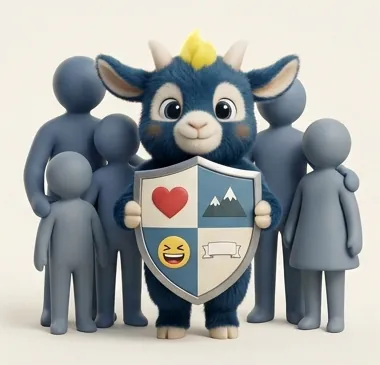

Essai gratuit · encore 24 jours
Recommandé pour Léo ce soir
La cabane impossible
Le cœur de la semaine 8 : Léo découvre qu’il réussit mieux en demandant.
20 minActifCoussins, couverture
Lancer · 20 min
Voir la fiche
14 moments ensemble
1 sur 3 cette semaine
3 semaines complètes d’affilée
Cette semaine
Le programmeSemaine 8 · Sur qui je compte. Les trois premières suffisent.
Mes trois personnes
10 · 20 · 30 min
La cabane impossible
10 · 20 · 30 min
La demande de la semaine
10 · 20 min
Le chapeau des talents
10 · 20 · 30 min
Selon ton moment
Tout voirRien à préparerSoir à platIl dit nonEn voitureBouger30 minutesWeek-end
Tu peux commencer dans la minute.
Les trois choses
10 · 20 · 30 min
Où je l’ai déjà sentie
10 · 20 min
La prochaine fois en classe
10 · 20 min
Tout le parcours
Le programmeAncrerDévelopperIntégrer
Semaines 3 à 10 : le cœur du travail.
Le mur des impossibles
10 · 20 · 30 min
La roue des six
10 · 20 · 30 min
Deux outils, tu choisis
10 · 20 · 30 min
Spaghetti cru, spaghetti cuit
10 · 20 · 30 min
Voir les 53 activités, triées par âge

Envie d’aller plus loin ?
Un coach, en groupe ou seul, près de chez toi.
Le carnet
jeudi 8 octobre
Mes trois personnes
« Maman, Coach Lylian, Noah. Noah, c’est pour quand j’ai peur au hockey. »
dimanche 4 octobre
Le podium des progrès
« Avant, je lâchais après une erreur. Là, je reviens au jeu. »
mercredi 30 septembre
Spaghetti cru, spaghetti cuit
Son corps qui se pose : épaules basses, trois respirations.